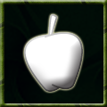

|

|
Mentor
Bringing new monsters into the clan is important. Without a large number of monsters, the clan will not be able to protect itself or expand. The mentor ability helps the monster who takes it bring new monsters into the fold, and rewards him for doing so.
Command: N/A
This ability is based on:
Authority
Energy
Affects of Mentor:
- New monsters who are being Mentored get a favor Point bonus for all activities they do. While in the presence of their Mentor, the bonuses may increase. These bonuses depend on the rank of the Mentor.
- Mentors themselves get a bonus of a small percentage of Favor Points gained by their Minions
- All resources looted by a Mentored monster get a "tithing" bonus tacked on to them.
- Mentors get access to the mentor channel throughout the life of the character.
Commands usable with Mentor:
- @toggle-mentor - Toggles the mentor channel on and off.
- mentor < text > - Used for speaking on the mentor channel.
- reincarnate < minion name > -- This will allow a mentor to reincarnate to it's minions location.
|